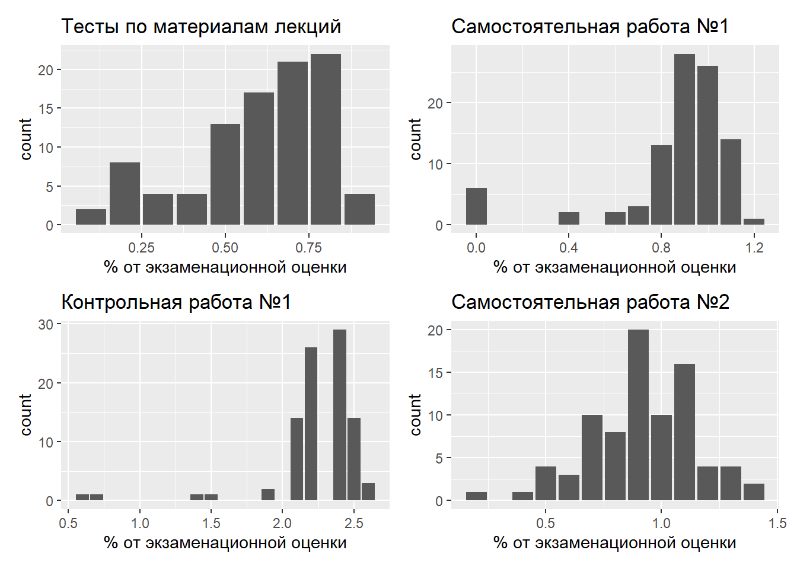
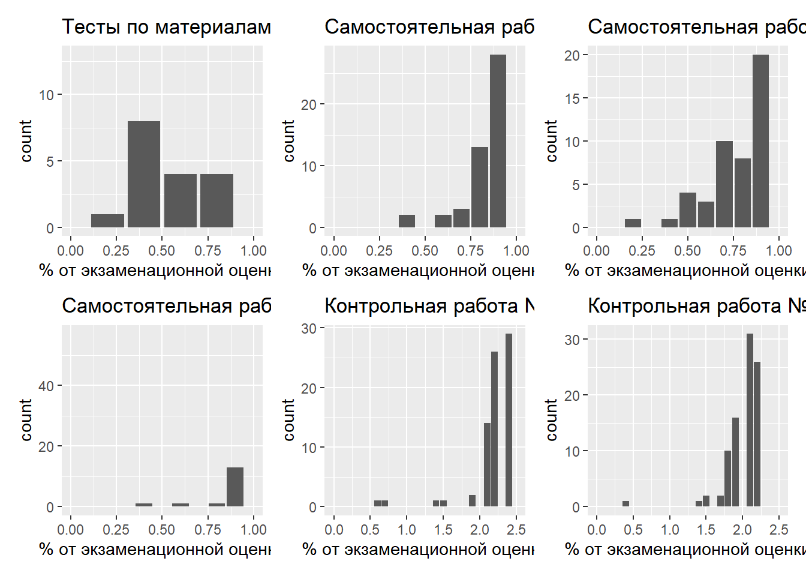
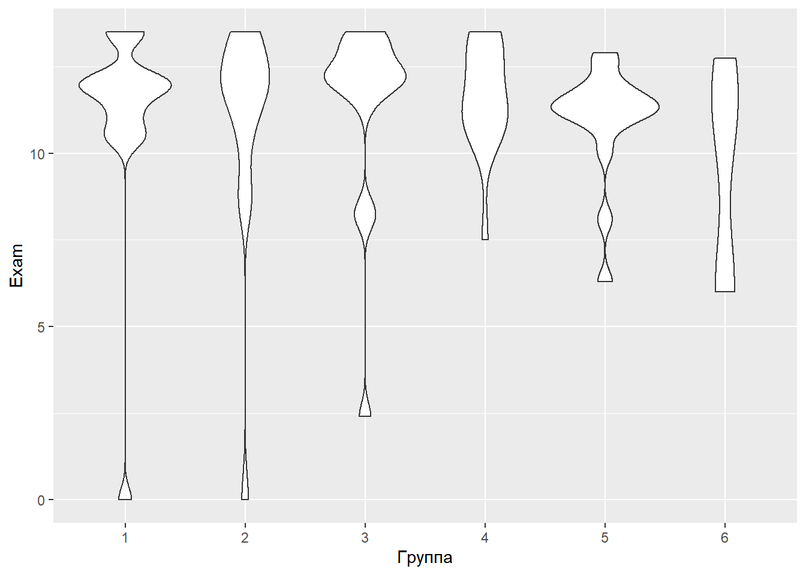
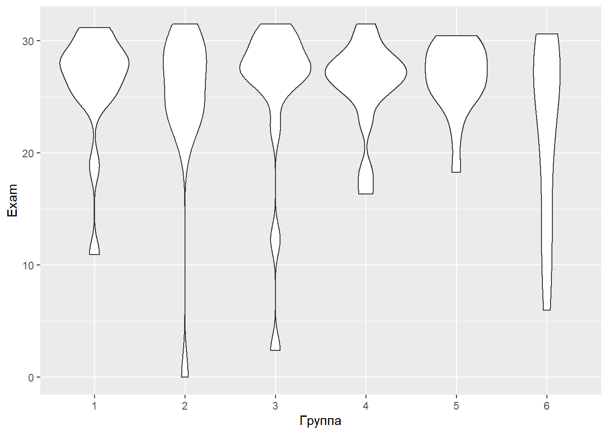
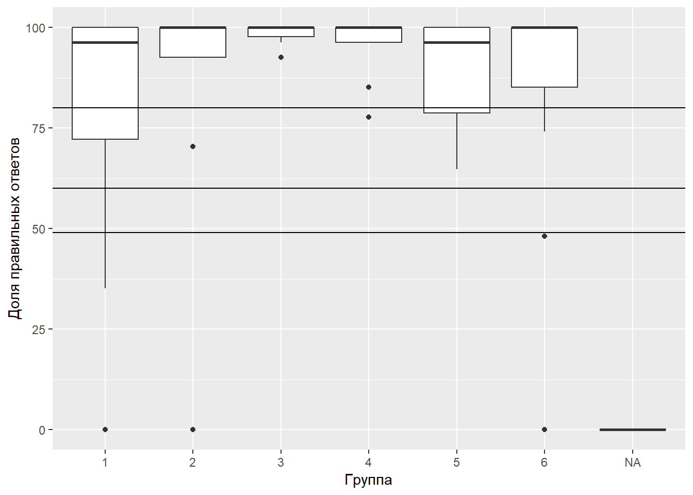

Анализ работы
Контрольная работа № 1
Распределение результатов
Вот такие предварительные результаты по контрольной.
А вот так выглядит распределение по группам. Горизотальные линии отделяют тройку (50-60%), четверку (60-80%) и пятерку (более 80%).

Распределение оценок
| Оценка | Количество студентов |
|---|---|
| 2 | 18 |
| 3 | 3 |
| 4 | 16 |
| 5 | 62 |
Господа, тем, кто получил ниже тройки, надо собраться и на следующей контрольной подтянуться! Ну и не забывайте про повышающие коэффициенты за работу на семинарах…
Время выполнения работы
А вот так выглядит степень скооперированности работы студентов.

Группа № 4, видимо, самая дружная :), у них минимальный разброс значений. Звонок другу… Хорошая, но не факт, что лучшая, технология.
Трудность вопросов
А вот так выглядит распределение по количеству верных ответов на вопросы

Домашняя работа № 1
Распределение результатов по группам

Замечательные результаты! Большинство получили пятерки. Это радует…
Не раслабляйтесь, второе домашнее задание уже открыто.
Домашняя работа № 2
Распределение результатов по группам

Отлично! Почти все получили пятерки…
Уже боюсь вас на экзамене :)
Не раслабляйтесь, третье домашнее задание уже открыто.
Контрольная работа № 2
Распределение результатов

По-моему, стало заметно лучше, чем в предыдущий раз. Странно… работа, по-моему, сложнее. Впрочем, см. ниже оценку времени выхода в эфир.
А вот так выглядит распределение по группам. Горизотальные линии отделяют тройку (50-60%), четверку (60-80%) и пятерку (более 80%). Соотношние между группами не изменилось, но зато резко упала дисперсия, что тоже хорошо.

Распределение оценок на контрольной №2
| Оценка | Количество студентов |
|---|---|
| 2 | 14 |
| 3 | 2 |
| 4 | 8 |
| 5 | 75 |
Время выполнения работы

Ух, как все скоординировались-то! :)
Коллективный разум - это круто!
Но не забывайте, что на экзамене придется отдуваться в идивидуальном порядке…
Трудность вопросов
А вот так выглядит распределение по количеству верных ответов на вопросы

Домашняя работа № 3
Распределение результатов по группам

Финальные результаты по Домашним работам и по Контрольным
| Ф. И. | Группа | Контрольные % | Самостоятельные % | Надбавка за семинары |
|---|---|---|---|---|
| Абу Дийак Ксения | 6 | 80 | 83 | 18 |
| Азаматова Ляйсан | 6 | 0 | 1 | 0 |
| Амосов Артем | 2 | 98 | 96 | 9 |
| Аполлонов Василий | 3 | 98 | 97 | 18 |
| Афанасьев Роман | 2 | 98 | 99 | 6 |
| Бабина Полина | 5 | 96 | 84 | 9 |
| Бапинаев Роман | 3 | 88 | 97 | 15 |
| Бармасова Галина | 5 | 86 | 99 | 12 |
| Безлепкина Светлана | 1 | 84 | 94 | 15 |
| Бондарева Ольга | 5 | 98 | 84 | 9 |
| Бурнусуз Александра | 5 | 82 | 87 | 18 |
| Бученкова Дарья | 5 | 71 | 73 | 12 |
| Валина Анна | 4 | 92 | 91 | 6 |
| Верр Елисавета | 1 | 84 | 92 | 9 |
| Веселова Мария | 2 | 61 | 56 | 3 |
| Владимирова Снежана | 4 | 96 | 95 | 9 |
| Воскресенская Вероника | 3 | 92 | 81 | 9 |
| Ганкевич Владимир | 5 | 82 | 96 | 15 |
| Гвоздкова Вера | 3 | 94 | 99 | 18 |
| Глущенко Алексей | 2 | 53 | 65 | 15 |
| Гордецкая Ольга | 5 | 88 | 92 | 12 |
| Горобец София | 4 | 100 | 96 | 12 |
| Григорьева Татьяна | 6 | 88 | 97 | 15 |
| Давлетшин Шамиль | 5 | 94 | 91 | 15 |
| Долгова Диана | 1 | 69 | 97 | 9 |
| Дымская Маргарита | 3 | 98 | 96 | 15 |
| Завьялов Владислав | 4 | 100 | 94 | 15 |
| Завьялова Эвелина | 2 | 86 | 99 | 12 |
| Замышляева Валерия | 3 | 100 | 99 | 12 |
| Зубарева Екатерина | 1 | 84 | 47 | 6 |
| Зудова Татьяна | 1 | 67 | 97 | 15 |
| Зуева Анна | 6 | 88 | 95 | 18 |
| Иванов Вадим | 3 | 98 | 94 | 0 |
| Иванов Михаил | 3 | 100 | 92 | 12 |
| Изикеев Максим | 3 | 98 | 92 | 15 |
| Ильина Маргарита | 3 | 92 | 82 | 18 |
| Кайров Арсений | 4 | 88 | 97 | 12 |
| Кинцель Татьяна | 2 | 100 | 100 | 9 |
| Кириллова Екатерина | 6 | 65 | 99 | 18 |
| Козлов Николай | 4 | 78 | 97 | 15 |
| Колоусова Ксения | 3 | 96 | 97 | 15 |
| Копонова Анастасия | 2 | 98 | 100 | 12 |
| Красноперова Елизавета | 6 | 92 | 94 | 15 |
| Куаншкалиева Айгуль | 1 | 78 | 88 | 12 |
| Кузьмина Дарья | 1 | 88 | 96 | 6 |
| Куракина Татьяна | 1 | 90 | 96 | 15 |
| Лапшин Никита | 1 | 98 | 73 | 15 |
| Лукина Елизавета | 1 | 71 | 96 | 18 |
| Луковкина Виктория | 5 | 90 | 88 | 9 |
| Мазо Артём | 1 | 94 | 99 | 18 |
| Мазур Евгения | 3 | 92 | 91 | 12 |
| Малышев Михаил | 2 | 35 | 84 | 0 |
| Маркина Алиса | 6 | 84 | 88 | 15 |
| Маслова Алена | 4 | 100 | 90 | 12 |
| Матвевнина Дарья | 2 | 100 | 99 | 15 |
| Матвеев Константин | 6 | 78 | 81 | 15 |
| Некрасова Александра | 5 | 100 | 83 | 15 |
| Никифорова Валерия | 3 | 100 | 99 | 9 |
| Ожиганова Арина | 6 | 92 | 97 | 15 |
| Паницина Валентина | 1 | 82 | 51 | 9 |
| Панферов Егор | 5 | 94 | 96 | 12 |
| Парахин Игорь | 4 | 98 | 86 | 12 |
| Платова Софья | 2 | 86 | 84 | 12 |
| Постаногова Дарья | 6 | 80 | 96 | 12 |
| Праховник София | 6 | 88 | 65 | 12 |
| Раппопорт Александр | 5 | 92 | 97 | 18 |
| Романова Анна | 4 | 78 | 90 | 3 |
| Рудык Анна | 4 | 100 | 99 | 9 |
| Свечникова Полина | 1 | 24 | 52 | 9 |
| Серединская Мария | 5 | 98 | 96 | 12 |
| Симанова Ангелина | 2 | 98 | 100 | 12 |
| Смутин Даниил | 5 | 86 | 83 | 15 |
| Совестнов Александр | 1 | 96 | 97 | 18 |
| Сосновский Игорь | 1 | 96 | 99 | 12 |
| Стулова Лидия | 6 | 45 | 77 | 12 |
| Сысоев Евгений | 4 | 92 | 96 | 9 |
| Тимошенко Руслан | 3 | 90 | 94 | 6 |
| Тишкова Мария | 2 | 100 | 100 | 12 |
| Тыщук Елизавета | 4 | 100 | 92 | 9 |
| Федотова Алена | 4 | 100 | 95 | 9 |
| Фрейнд Светлана | 2 | 100 | 97 | 12 |
| Чернейко Юлия | 3 | 96 | 90 | 9 |
| Чихун Анастасия | 4 | 100 | 94 | 12 |
| Шапиро Александра | 4 | 100 | 97 | 12 |
| Шикштенайте Анастасия | 1 | 18 | 17 | 0 |
| Шилькините Гражина | 3 | 92 | 97 | 18 |
| Шишков Алексей | 4 | 98 | 81 | 15 |
| Яньшин Николай | 6 | 88 | 94 | 18 |